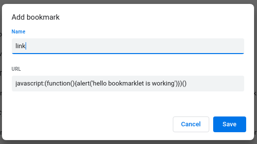

a simple way to run JavaScript code to modify browser content via a bookmark button.
<a href="JavaScript:(function(){//do whatever you wanna do})()" > link </a>
another way :

The above steps are follwed here to create a link :
drag this
link
and drop it in the upperbar of the browser to bookmark a javascript function which
will be run when this bookmark button is pressed.